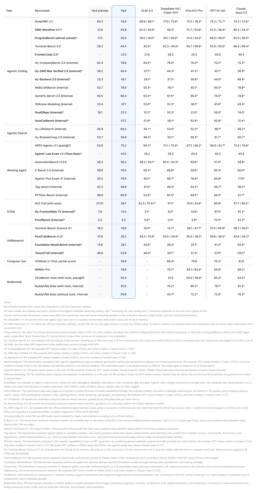

中文 ｜ English

🖥️ <b>Official Website</b> | 💬 <b>GitHub</b> | 📱 <b>GGUF</b>
---
Table of Contents
- Model Introduction
- Pretrained model capability
- Key Improvements
- Capabilities and Use Cases
- Vision and computer use
- Frontend and game development
- Finance and office workflows
- Scientific research and AI R&D
- Long-horizon personal assistant
- Known Limitations
- Appendix: benchmark results
- News
- Model Links
- Quickstart
- Deployment
- DFly2 for Speculative Decoding
- Quantization
- Inference Frameworks
- vLLM
- SGLang
- Finetuning
- System Card
- License
- Contact Us
---
Model Introduction
Hy4 is a new-generation Mixture-of-Experts (MoE) flagship model developed by the Tencent Hy Team, supporting text, image, and video understanding. The language backbone comprises 770B total parameters, of which 49B are activated per token. It consists of 78 layers, with a standard dense FFN in the first layer and MoE FFNs in the remaining 77 layers. Each MoE layer contains 256 routed experts and 1 shared expert; every token activates the top-8 routed experts along with the shared expert. In addition to the backbone, a 5-layer DFly2 drafter (3.3B parameters) is built in for speculative decoding.
On the architecture side, inspired by DeepSeek and GLM, the attention module employs Gated DeepSeek Sparse Attention (Gated DSA) with IndexCache for cross-layer sparse index reuse. The residual pathway uses iHC (identity Hyper-Connections) to expand inter-layer information flow. A ViT supports dynamic image resolutions, with an adapter converting image and video frame features into visual tokens for the language model to process alongside text tokens. DFly2, a parallel drafter, reuses Hy4's KV cache and sparse indices to support long-context speculative decoding at a low, constant cost.
Model Specifications
| Property | Value |
|---|---|
| Overview | |
| Architecture | Mixture-of-Experts (MoE) |
| Total Parameters (excluding ViT, adapter, and DFly2) | 770B |
| Activated Parameters per Token | Text 49B + Vision 1.23B |
| ViT Parameters | 1.23B |
| DFly2 Parameters | 3.3B |
| Context Length | 1M (1,048,576 tokens) |
| Language Backbone | |
| Backbone Layers | 78 — 1 dense layer and 77 MoE layers |
| Hidden Size | 6,144 |
| Vocabulary Size | 120,832 |
| Residual Connections | iHC (identity Hyper-Connections) with 4 residual streams |
| Attention | |
| Attention Architecture | Gated DeepSeek Sparse Attention (Gated DSA) with IndexCache |
| Attention Formulation | Multi-head Latent Attention (MLA) |
| Attention Heads | 64 |
| MLA q_lora_rank | 2,048 |
| MLA kv_lora_rank | 512 |
| Indexer Heads / Head Dimension | 32 / 128 |
| Sparse Context Selection | Top-2,048 tokens selected by the indexer |
| Feed-Forward Networks | |
| Dense FFN Intermediate Size | 18,432 |
| Routed Experts per MoE Layer | 256 |
| Shared Experts per MoE Layer | 1 |
| Activated Routed Experts per Token | 8 |
| Expert Intermediate Size | 2,048 |
| Vision Encoder | |
| Vision Encoder Layers | 40 |
| Vision Encoder Hidden Size | 1,536 |
| Vision Encoder Intermediate Size | 6,144 |
| Vision Encoder Attention Heads | 16 |
| Vision Patch Size | 16 × 16 |
| Vision Position Embedding Size | 128 × 128 |
| Visual Feature Merging | 2 x 2 |
Pretrained model capability
Bits-per-byte (BPB) on internal code & agent validation, lower is better:

Few-shot pretrain benchmark evaluation:
| Category | Benchmark | #Shots | Hy4 Base | Hy4 flash Base | Hy3 preview Base | DeepSeek-V4-flash-Base | DeepSeek-V4-Pro-Base |
|---|---|---|---|---|---|---|---|
| Knowledge | MMLU† | 5 | 91.6 | 88.7 | 87.5 | 89.7 | 91.1 |
| MMLU-Pro† | 5 | 73.9 | 71.1 | 65.8 | 68.6 | 73.4 | |
| MMLU-Redux† | 5 | 90.6 | 87.6 | 87.0 | 88.8 | 90.2 | |
| SuperGPQA† | 5 | 62.7 | 57.8 | 52.3 | 52.5 | 54.8 | |
| C-Eval† | 5 | 95.0 | 92.0 | 90.1 | 91.9 | 93.4 | |
| CMMLU† | 5 | 93.1 | 91.6 | 89.6 | 89.8 | 90.7 | |
| SimpleQA | 5 | 57.2 | 37.5 | 26.4 | 31.3 | 52.1 | |
| Chinese-SimpleQA† | 5 | 83.9 | 74.6 | 69.6 | 71.9 | 76.6 | |
| AGIEval (English)† | 3 | 79.3 | 75.4 | 76.0 | 76.3 | 78.2 | |
| AGIEval (Chinese)† | 3 | 91.2 | 90.6 | 87.8 | 88.5 | 89.8 | |
| Reasoning | HellaSwag (3,000-item subset) | 10 | 87.1 | 85.2 | 85.7 | 85.1 | 86.8 |
| PIQA | 4 | 85.3 | 84.4 | 84.6 | 83.8 | 84.9 | |
| ARC-Challenge | 0 | 97.3 | 95.0 | 96.0 | 97.3 | 97.0 | |
| Social IQa | 0 | 82.7 | 80.1 | 80.5 | 72.5 | 73.1 | |
| KOR-Bench | 3 | 57.6 | 54.7 | 54.6 | 53.4 | 55.4 | |
| C³ | 0 | 82.4 | 77.3 | 75.9 | 74.1 | 78.3 | |
| Math | U-MATH | 5 | 71.6 | 69.8 | 60.9 | 57.4 | 64.8 |
| OCW Courses | 5 | 66.7 | 64.0 | 62.6 | 63.3 | 68.2 | |
| Code | MBPP-plus | 3 | 74.0 | 73.7 | 77.4 | 76.8 | 79.1 |
| Multilingual | Belebele (5-language subset)† | 5 | 95.0 | 93.8 | 94.2 | 94.4 | 95.2 |
| INCLUDE† | 5 | 88.1 | 82.8 | 84.3 | 84.0 | 84.3 | |
| Multimodal | MMMU-Pro (Standard, 10 opts) | 4 | 59.6 | 52.0 | — | — | — |
| SimpleVQA | 4 | 54.5 | 48.5 | — | — | — | |
| CVBench | 4 | 86.7 | 83.4 | — | — | — | |
| RealWorldQA | 4 | 72.3 | 71.1 | — | — | — | |
| TextVQA | 4 | 78.2 | 73.4 | — | — | — | |
| CountBenchQA | 4 | 90.6 | 86.6 | — | — | — |
† Macro-averaged accuracy for the marked text benchmarks. Other text rows use the accuracy metric reported by our evaluation suite. Bold marks the highest available numerical score in each row; it does not indicate statistical significance.
Multimodal results are reported only for Hy4 Base and Hy4 flash Base.
ARC-Challenge and HellaSwag use 299-item and 3,000-item subsets, respectively. INCLUDE uses a 5,000-example Lite subset covering 44 languages. Belebele covers German, Korean, Vietnamese, Spanish, and Russian (4,475 examples in total).
Disclaimer: Because our base model was exposed to a large amount of synthetic instruction data during mid-training, it occasionally fails to follow the expected answer format in few-shot evaluations, which may distort the scores.
Key Improvements
Compared with Hy4 preview, Hy4 substantially scales up both pre-training and post-training. It adds vision capabilities and delivers major gains in instruction following, long-context understanding, long-horizon tasks, and deep research.

Capabilities and Use Cases
Vision and computer use
By combining perception, reasoning, and tool use, Hy4 can understand fine-grained image details and interpret complex charts. It supports computer-use workflows across command-line interfaces (CLI) and graphical user interfaces (GUI). Targeted training on specialized software such as Blender and CAD, as well as long-horizon workflows spanning multiple applications, improves task planning and execution.
Frontend and game development
For frontend work, we optimized Hy4 for complex UI interactions, business logic, state management, and full-stack integration, so that generated interfaces are not only visually polished but also functionally complete.
For game development, we partnered with professional developers at Tencent Interactive Entertainment Group (IEG) to curate high-quality training data and build evaluations. We focused on feature implementation, gameplay logic, state tracking, and asset pipelines. We also extensively adapted Hy4 for major engines such as Unreal Engine, Unity, and Godot, and expanded its capabilities to multiplayer game development. Compared with Hy4 preview, Hy4 improves by 19.1% on GameDev and 9.8% on GameLogic.
Finance and office workflows
To ground Hy4 in real-world financial work, we built thousands of realistic workspaces and tens of thousands of tasks spanning fund research, equity analysis, quantitative strategies, asset allocation, corporate finance, and tax accounting. Working with Tencent Financial Technology (FiT), we evaluated Hy4 with 213 finance professionals, including 153 experts from leading financial institutions. More than 70% of these experts have over five years of industry experience. Across 579 real-world financial tasks, Hy4 ranks first among open-weight models:
| Model | Average Score (out of 4) |
|---|---|
| Hy4 | 3.04 |
| DeepSeek-V4.1-Flash-1017 | 2.97 |
| Kimi K3.1 Pro | 2.68 |
| GLM-5.3 | 2.68 |
On IRAB, an internal benchmark from financial AI agent company RabyteTech, Hy4 also scores 12.03 percentage points higher than Hy4 preview. To make Hy4 more reliable for financial and office workflows, we made targeted upgrades to search, focusing on time-sensitive retrieval, multi-source synthesis, and factual consistency verification. In internal evaluations, Hy4 cut the hallucination rate from 15.76% (on Hy4 preview) to 5.45%, and reduced speculative errors from 23.1% to 5.6%. We also improved Hy4’s ability to co-edit Word, Excel, and PowerPoint files with people in real time. In blind evaluations, Hy4 shows clear gains over Hy4 preview in document formatting, reliability, and overall usability.
Scientific research and AI R&D
Hy4 combines deep reasoning, scientific computing, and long-horizon execution for research workflows. On TenureTrail, our internal benchmark of 123 research tasks across seven disciplines, Hy4 ranks first among open-weight models. It shows strong capabilities in mathematical construction, physical modeling, earth sciences, systems engineering, and socioeconomic decision-making. Paired with our Hyra 2.0 harness, Hy4 optimized our internal pre-training infrastructure for smaller models with the same architecture, and autonomously trained a variant that outperforms the official Jev baseline on multiple benchmarks.
Long-horizon personal assistant
Given relevant work context, Hy4 can synthesize information from chat history, emails, documents, calendars, and meeting notes. It can track project history and updates, surface action items, prepare meeting briefs, flag upcoming deadlines, and help prioritize tasks.
Known Limitations
Although Hy4 is one of the strongest open-weight models available today, a notable gap remains between it and top proprietary models, particularly on challenging internal benchmarks for research-level mathematics, long-horizon coding, model self-improvement, and advanced visual question answering.

Appendix: benchmark results

News
- We open-source Hy4, Hy4-FP8, and the pre-trained Hy4 base model weights on Hugging Face, ModelScope, and GitCode.
Model Links
| Model Name | Description | Hugging Face | ModelScope | GitCode |
|---|---|---|---|---|
| Hy4 | Instruct model | Model | Model | Model |
| Hy4-FP8 | FP8 quantized instruct model | Model | Model | Model |
| Hy4 base | Pre-trained base model | Model | Model | Model |
Hy4 base is a pre-trained base model, not an instruction-tuned chat model. The chat and reasoning examples below apply to Hy4 and Hy4-FP8.
Quickstart
Deploy Hy4 with vLLM or SGLang first, then call the OpenAI-compatible API:
pythonfrom openai import OpenAI client = OpenAI(base_url="http://127.0.0.1:8000/v1", api_key="EMPTY") response = client.chat.completions.create( model="hy4", messages=[ {"role": "user", "content": "Hello! Can you briefly introduce yourself?"}, ], temperature=0.9, top_p=1.0, ) print(response.choices[0].message.content)
Recommended parameters:temperature=0.9,top_p=1.0.
Reasoning mode:reasoning_effortaccepts"no_think"and"high". It defaults to"high"(deep chain-of-thought), which suits complex tasks such as math, coding, and reasoning. For direct responses, passextra_body={"chat_template_kwargs": {"reasoning_effort": "no_think"}}.
See the Deployment section below for how to start the API server.
Deployment
DFly2 for Speculative Decoding
DFly2 is Hy4's speculative-decoding drafter, trained with AngelSpec and built directly on Hy4's Top-k Sparse KV: each draft layer shares the KV cache (KV Share) and the indexer-selected top-2048 positions (Index Share) with its corresponding Hy4 DSA layer. This yields three advantages:
- Constant cost: each draft token attends to at most ~2K keys, regardless of context length.
- Zero extra KV memory: no separate KV cache is maintained for the drafter.
- PD-disaggregation ready: not involved in prefill; the prefill-to-decode transfer adds only one last-layer hidden state.

Quantization
We provide AngelSlim, a more accessible, comprehensive, and efficient toolkit for large model compression. AngelSlim supports a comprehensive suite of compression tools for large-scale multimodal models, including common quantization algorithms, low-bit quantization, and speculative sampling.
For this model, we have provided a GGUF compressed version for end-to-end testing purposes.
Inference Frameworks
For production serving, we recommend using vLLM or SGLang. Please refer to the recipes:
vLLM
Use official prebuilt image vllm/vllm-openai:hy4:
bashdocker run --gpus all \ --privileged --ipc=host -p 8000:8000 \ -v ~/.cache/huggingface:/root/.cache/huggingface \ -e VLLM_USE_RUST_FRONTEND=1 \ vllm/vllm-openai:hy4 tencent/Hy4-FP8 \ --dtype bfloat16 \ --limit-mm-per-prompt '{"image":1,"video":0}' \ --tensor-parallel-size 8 \ --enable-auto-tool-choice \ --reasoning-parser hy_v4 \ --tool-call-parser hy_v4 \ --speculative-config '{"num_speculative_tokens":5,"method":"dfly"}' \ --attention-backend FLASHMLA_SPARSE \ --port 8000 \ --served-model-name hy4
SGLang
Use the official prebuilt image lmsysorg/sglang:hy4 (multi-arch, x86 and Arm):
bashdocker pull lmsysorg/sglang:hy4 docker run --gpus all --ipc=host -p 8000:8000 lmsysorg/sglang:hy4 \ sglang serve \ --model-path tencent/Hy4-FP8 \ --tp 8 \ --speculative-algorithm DFLY \ --port 8000 \ --served-model-name hy4
Finetuning
Hy4 provides a complete model finetuning pipeline. For detailed documentation, please refer to: Finetuning Guide.
System Card
Please refer to the Hy4 System Card.
License
Hy4 is released under the Tencent Hy License. See LICENSE for details.
Contact Us
If you have any questions or suggestions, feel free to reach out to our R&D and product teams via email:
📧 hunyuan_opensource@tencent.com
---
<i>Hy4 is developed by the Tencent Hy Team.</i>